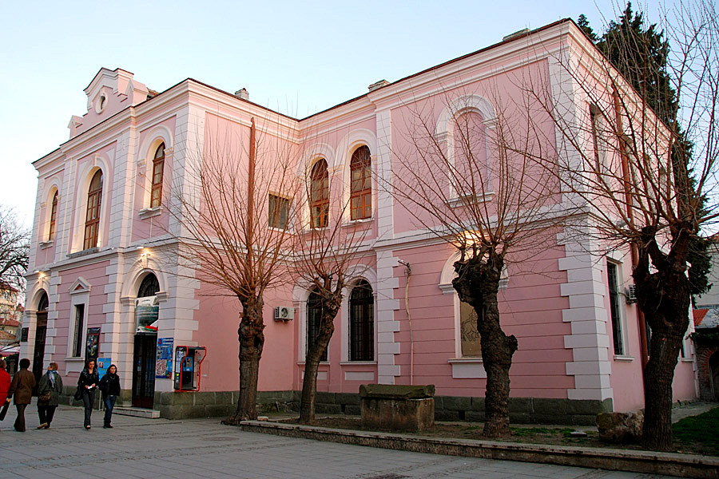
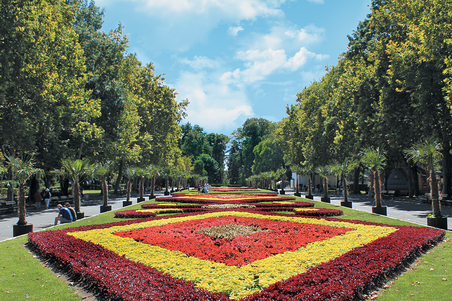

Burgas Central railway station is the main station serving the Black Sea
city and municipality of Burgas, the fourth most populous city, and the
largest and most important port, in Bulgaria. Opened in 1903, the station
is the terminus of the line from Karnobat, which links Burgas with the rest
of Bulgaria's rail network.

Archaeological Museum
Archaeological Museum is the oldest museum in Burgas, preserving the cultural and
historical heritage of some of the most ancient towns in the present Bulgarian
territory - Sozopol (Apollonia), Nessebar (Messambria), Pomorie (Anhialo) and others.
Today the Archaeological museum is one of the four expositions in Regional historical museum
Burgas. The museum was established in 1912 as a private museum of the Debelt Archaeological Society.
The exposition presents collections of archaeological findings related to ancient Thrace,
the Greek colonies along the Black Sea coast and the time of the Roman Empire. In the halls
of the museum can be seen exhibits found in archaeological research in the entire Burgas region.
Here is the earliest statue ever found on the Bulgarian lands and one of the most complete collections
of pre-monetary forms in the country and on the Balkans.

Sea Garden
The Sea Garden is the Bulgarian port city of Burgas' largest and best known public
park. It is located along the city's coast on the Black Sea and it is an important tourist
attraction and a national monument of landscape architecture on the Balkans. Near the
Sea Garden is located one of the most popular district of Burgas - district of Lazur.
The area of the park is around 800 decares. The park is planted with trees and shrubs.
In those areas there are many sculptures sparsed around. The most important monument probably
is the monument of Alexander Pushkin.